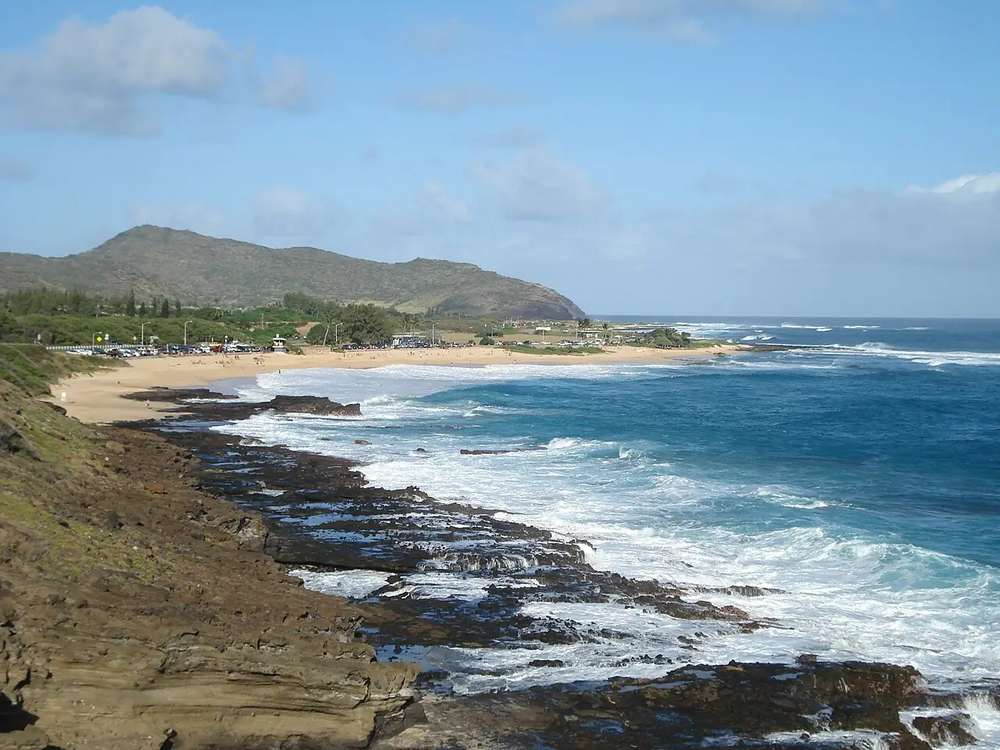

Sandy Beach
Oahu, Hawaï, États-Unis · bodyboard

Plage de la pointe sud-est d’Oahu, célèbre pour son shore break qui explose directement sur le sable. C’est un haut lieu du bodyboard et du bodysurf pour les locaux expérimentés, mais aussi l’une des plages les plus accidentogènes de l’île.
- Lieu
- Oahu, Hawaï, États-Unis
- Niveau
- Expert
- Activités
- bodyboard
- Type d'eau
- Mer / océan
- Coordonnées
- 21.28, -157.67 (position approximative du secteur)
Dangers à connaître
- Shore break violent : blessures graves à la nuque et au dos fréquentes.
- Courants d’arrachement puissants quand la houle est forte.
- Rochers de lave aux extrémités de la plage.
Le conseil d'Ocean Buddy
Si tu n’es pas un bodyboarder aguerri, regarde depuis le sable : parle aux sauveteurs avant d’entrer et respecte les drapeaux.
Ouvrir dans Ocean Buddy Télécharger sur l'App Store
Source : Fiche Ocean Buddy · septembre 2026 · à vérifier localement.